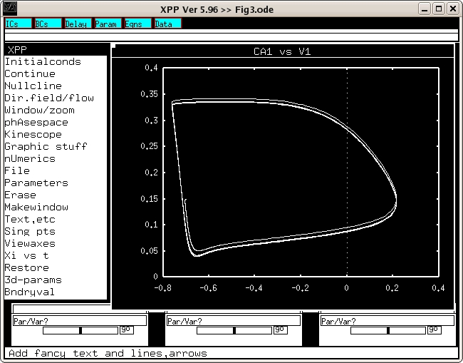

This is the readme for Kuznetsova AY, Deth RC (2008) A model for modulation of neuronal synchronization by D4 dopamine receptor-mediated phospholipid methylation. J Comput Neurosci 24:314-29 Abstract: We describe a new molecular mechanism of dopamine-induced membrane protein modulation that can tune neuronal oscillation frequency to attention related gamma rhythm. This mechanism is based on the unique ability of D4 dopamine receptors (D4R) to carry out phospholipid methylation (PLM) that may affect the kinetics of ion channels. We show that by deceasing the inertia of the delayed rectifier potassium channel, a transition to 40 Hz oscillations can be achieved. Decreased potassium channel inertia shortens spike duration and decreases the interspike interval via its influence on the calcium-dependent potassium current. This mechanism leads to a transition to attention-related gamma oscillations in a pyramidal cell-interneuron network. The higher frequency and better synchronization is observed with PLM affecting pyramidal neurons only, and recurrent excitation between pyramidal neurons is important for synchronization. Thus dopamine-stimulated methylation of membrane phospholipids may be an important mechanism for modulating firing activity, while impaired methylation can contribute to disorders of attention. Usage: The xpp program by Bard Ermentrout is available from http://www.math.pitt.edu/~bard/xpp/xpp.html Start the simulation for one of the figures by typing for example xppaut Fig3.ode and then select Initialconds -> Go. A graph similar to Fig 3. will appear:  These files were supplied by Dr Richard Deth. Please send questions to Anna Kuznetsova.